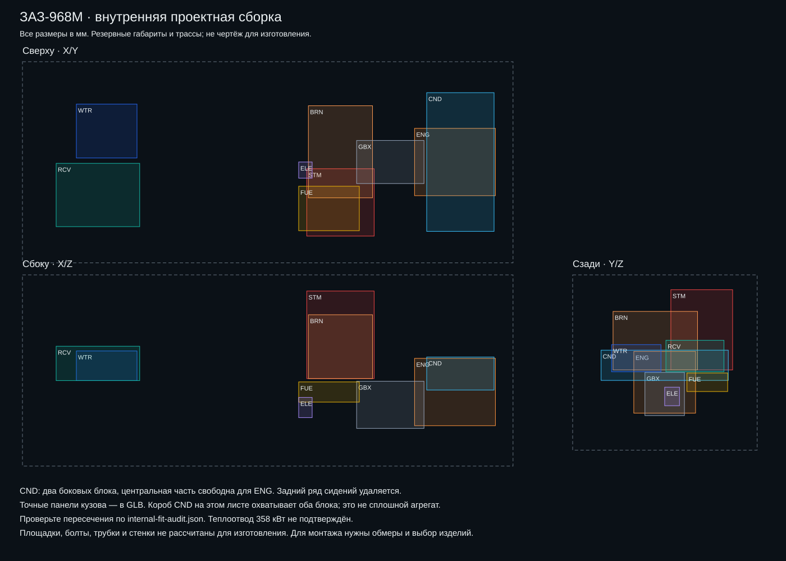
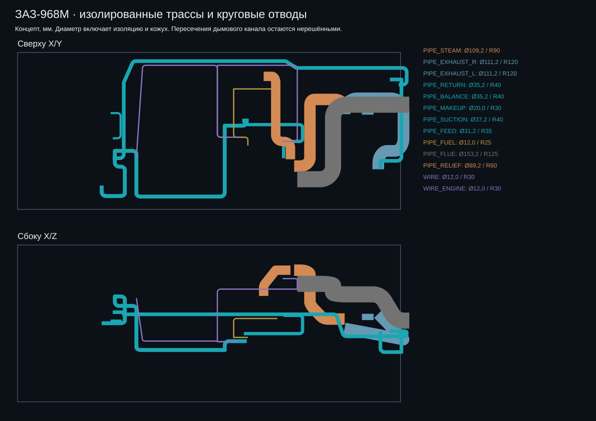
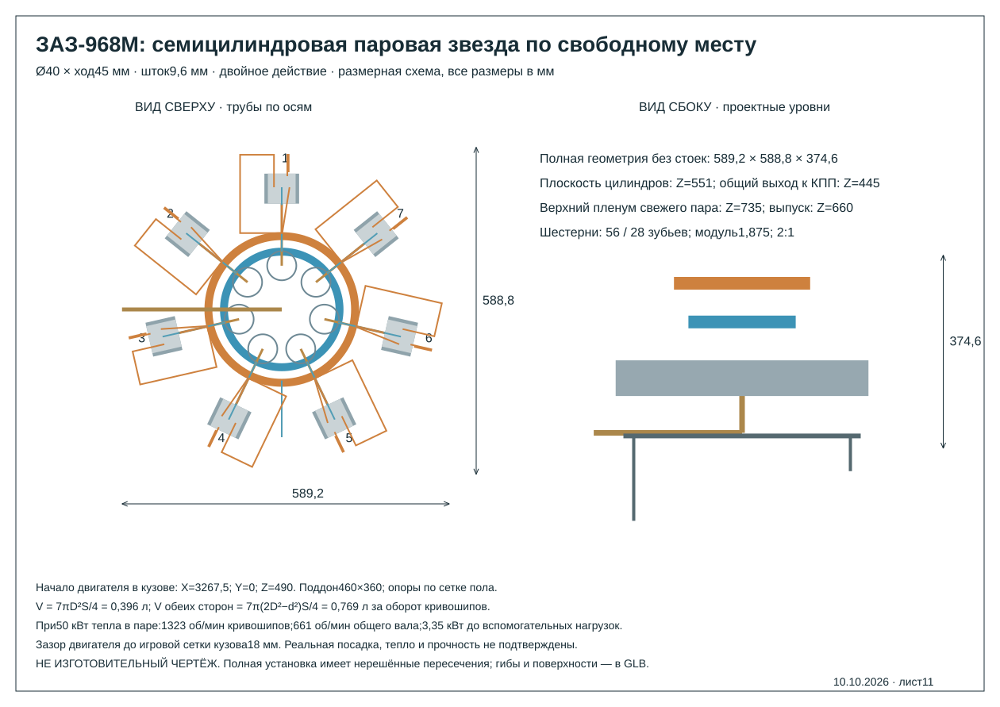

Нагрев
Источник тепла нагревает воду в генераторе, затем пар перегревается.
Пять источников →Модель, расчёты и документы связаны между собой. Начните с нужной задачи — подробности доступны внутри каждого раздела.
ЗАЗ-968М, двигатель двойного действия, конденсаторы и возврат воды. Посмотрите сборку целиком, выберите отдельный узел или проследите путь пара.

Предварительная инженерная модель. Геометрия части узлов и характеристики оборудования ещё требуют подтверждения. Расчётные гипотезы, найденные проблемы и архивные варианты указаны в соответствующих разделах.
Проверка физики →Источник тепла нагревает воду в генераторе, затем пар перегревается.
Пять источников →Пар поочерёдно поступает в камеры с обеих сторон поршней и совершает работу.
Посмотреть двигатель →Отработанный пар отдаёт тепло воздуху и превращается в воду.
Физика конденсатора →Насосы возвращают конденсат в генератор. Подпитка покрывает заданные потери.
Проследить движение →Сценарии — цели исследования. Бюджеты являются предварительными оценками; паспорт выбранной установки пока отсутствует.
50 км/ч · цель расчётного сценария
Небольшая мощность сохраняет проблему теплоотвода.
Исследовать вариант →80 км/ч · цель расчётного сценария
Остаток до 1200 кг — около 55 кг с одним водителем.
Исследовать вариант →100 км/ч · цель расчётного сценария
Превышение условной полной массы — 18,4 кг.
Исследовать вариант →Компоновочные и поясняющие материалы. Их статус указан на каждом листе.

Три проекции и целевые габариты агрегатов.

Генератор, машина, конденсатор и возврат воды.

Регулирование процесса и независимая защитная цепь.

Предложение органов управления и индикации.

Генератор вместо заднего сиденья, наружный конденсатор.

Два места, отдельная горелка, наружный конденсатор и координаты.

Резервные габариты в трёх проекциях; не чертёж для изготовления.

Проекции и таблица ID/OD, полного диаметра, радиусов, скоростей и теплопотерь; концепт.

Семь Ø40 × 45, проверенная сетка и размерная схема; не изготовительный чертёж.